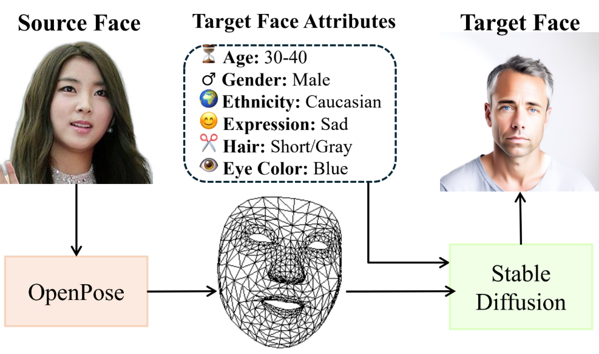
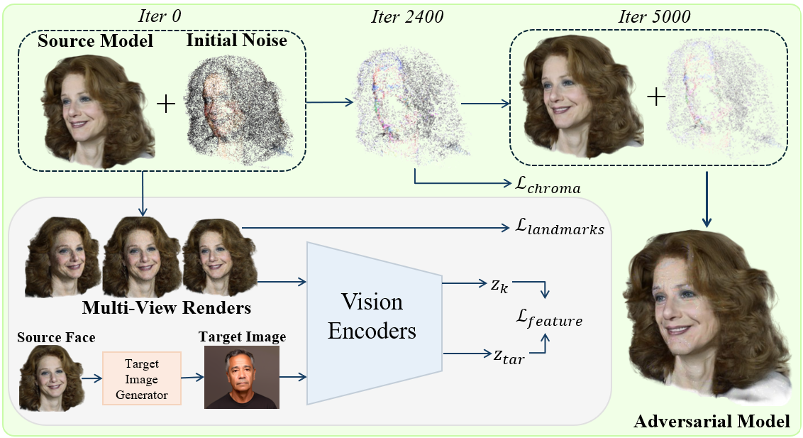
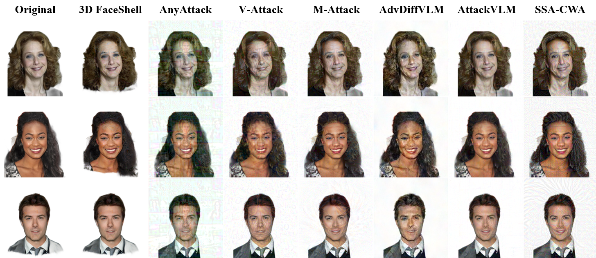
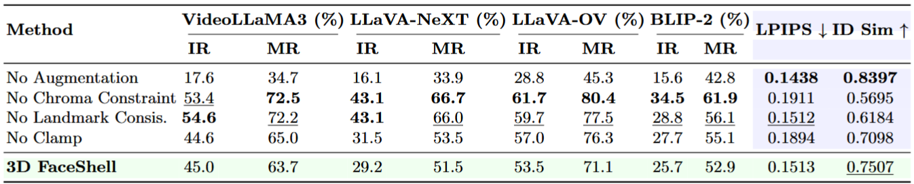

Abstract
3D FaceShell is a privacy-preserving framework that manipulates how vision-language models interpret 3D face avatars while preserving facial identity and visual realism. By introducing a learnable Gaussian shell around a frozen 3D Gaussian Splatting representation, FaceShell redirects attribute predictions across viewpoints without altering the underlying face. Extensive experiments demonstrate strong semantic manipulation performance while maintaining significantly higher perceptual quality and identity consistency than existing 2D adversarial approaches.
Method Overview
3D FaceShell begins with a reconstructed 3D Gaussian Splatting face avatar and keeps the original geometry fixed. It then introduces a learnable auxiliary Gaussian shell around the face. Only the shell's appearance parameters are optimized, allowing the method to redirect vision-language model attribute predictions while preserving identity and photorealistic appearance.

Target image generation uses source pose information and desired facial attributes to synthesize a pose-aligned target face.

The Gaussian shell is optimized across multiple rendered views using feature alignment, landmark preservation, and chroma regularization.
Results
3D FaceShell achieves strong attribute injection and mismatch rates while preserving substantially higher perceptual quality and identity similarity than existing 2D adversarial baselines.

Qualitative comparisons show that 3D FaceShell produces visually subtle perturbations while better preserving the original face.

Main quantitative comparison across VideoLLaMA3, LLaVA-NeXT, LLaVA-OV, and BLIP-2.
BibTeX
@inproceedings{Bondurant_2026_ECCV,
title={3D FaceShell: Attribute Transfer in 3D Face Avatars as a VLM Defense Mechanism},
author={Bondurant, Weston and Das, Srijan and Le, Hieu and Schuckers, Stephanie},
booktitle={Proceedings of the European Conference on Computer Vision (ECCV)},
year={2026}
}